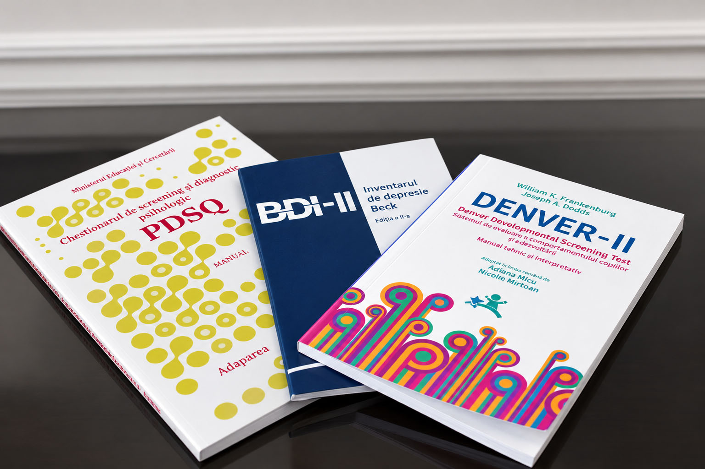

Evaluare psihologică
Acesta este primul pas în înțelegerea dificultăților cu care te confrunți. Cu ajutorul instrumentelor precum interviul clinic, observația directă sau a testelor psihologice, explorăm simptomele actuale, istoricul personal, resursele și dificultățile care îți influențează starea de bine.
În urma acestei evaluări vom avea o viziune cât mai clară asupra nevoilor tale și vom putea stabili împreună obiectivele procesului terapeutic.
Cred în importanța unei abordări multidisciplinare și în colaborarea dintre specialiști atunci când este necesar. Astfel, dacă va fi necesar și relevant pentru nevoile tale, voi recomanda colaborarea cu alți profesioniști, precum medicul psihiatru, logoped sau medici cu diferite specializări.
În cazul intervenției psihologice pentru copii, prima ședință se desfășoară exclusiv cu părinții sau cu persoanele care au rolul de îngrijitori principali. Această întâlnire oferă cadrul necesar pentru a înțelege istoricul dezvoltării copilului, preocupările actuale ale familiei și dificultățile care au determinat solicitarea sprijinului psihologic.
